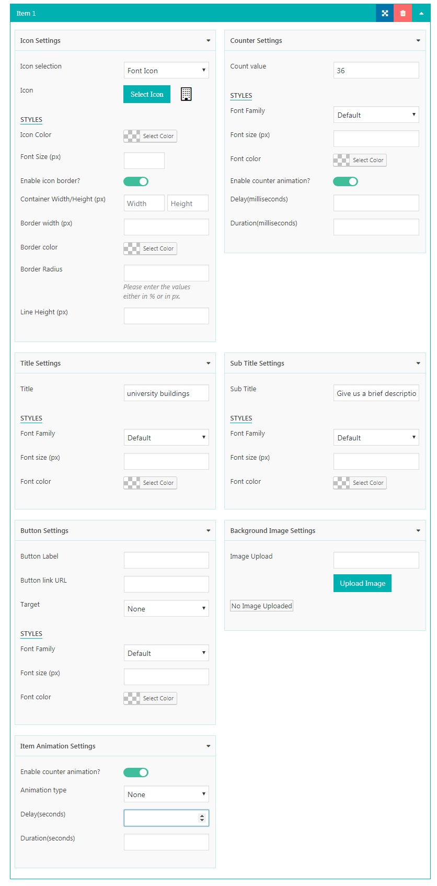

Created: 30th July 2017
By: AccessPress Themes
Email: support@accesspressthemes.com
Thank you for purchasing our plugin. If you have any questions that are beyond the scope of this help file, please feel free to email via our user page contact form here. Thanks so much!
The counter items consist of various configrations
In this configarion you will have an option to choose either icon or image to be used. If you want to use font icons you will get options to choose which font icons to use. Currenlty our plugin supports fontawesome icons, Dashicons and Genericons. If you want to use the custom image icons then there is an option to upload custom image icon as well.
In this settings you can configure the counter value. And if you want to use the custom styles for the counter you can configure it's font-family, font-size font color. But you can skip it if you want to use the plugin's default template style. Also you will get an option to enable the counter animation and when counter animation is enabled you will get options for the counter animations.
For the title settings. You will get an option to enter the title of the counter and if you want to use the custom styles you can configure it's font-family, font-size and font color as per your need. But you can skip it if you want to use the plugin's default template style.
For the Subtitle settings. You will get an option to enter the subtitle of the counter and if you want to use the custom styles you can configure it's font-family, font-size and font color as per your need. But you can skip it if you want to use the plugin's default template style.
In this settings if you want to add the links to the counter you can enter the link here. Here as well you will get the various style configration options if you want other than the default template style.
If you want to use the background image for each item you can enter the custom image url here.
If you want to show the animation to the counter item you can do the animation of the counter item by configuring here. Here you can choose animation type, it's delay and it's duration in seconds
Here you can configure the display settings.
The display settings consist of various options - Template selection, column settings and background settings
Here you can configure the display layout. You will get 15 predesigned templates options to choose.
Here you will get options to configure the number of the columns to be displayed on different devices like mobile, tablets and desktops
Here you will get an option to use the background. The background settings options consists of 4 options - none, background color, background image and background video
Please select this option if you don't want to use the background.
Please select this option if you want to use the background Image. Here you will get option to upload the image, option to enable the parallax effect and option to add overlay or not. If you select overlay you will get an option to choose overlay color.
Please select this option if you want to use the background color. Here you will get option to background color.
Please select this option if you want to use the background video. Here you will get option to choose which video source you want to use. You will get options to choose Youtube, Viemo or html5 video and option to enable the parallax effect, option to add overlay or not. If you select overlay you will get an option to choose overlay color.
After setting up the desired settings when you click save button the shortcode will be created and you can use the shortcode to display your configured stat counter.
To display the stat counter in the frontend is also very easy. You need to insert the generated shortcode in the post or page. You can direclty use the shortcode in post's or page's content as well or you can use template shortcode to use it in the template files.
Use the shortcode [everest_counter id='some-id'] to display the stat counter within your content.
Use the function <?php do_shortcode("[everest_counter id='some-id']"); ?> to display within template or theme files.
Once again, thank you so much for purchasing our plugin. As We said at the beginning, We would be glad to help you if you have any questions relating to this plugin. No guarantees, but We'll do our best to assist. If you have a more general question relating to the plugin on Codecanyon, you might consider visiting the forums and asking your question in the "Item Discussion" section.
AccesspressThemes